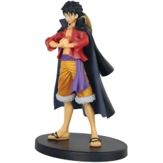
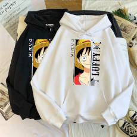
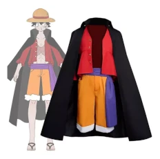
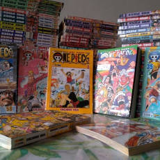
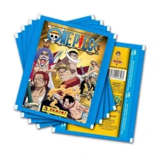

O mercado de One Piece é um ambiente onde os fãs da série podem encontrar uma variedade de
produtos
relacionados, como bonecos, camisetas, livros, álbuns de figurinhas e muito mais. Existem várias
plataformas online, como o MercadoLivre, onde você pode encontrar produtos relacionados a One
Piece.
Além disso, existem lojas físicas e eventos de anime que também oferecem produtos de One Piece.
Esses
produtos são populares entre os fãs da série e podem ser colecionáveis ou itens de uso diário.
No
mercado de One Piece, você pode encontrar desde mangás e DVDs até roupas e acessórios temáticos.
É um
lugar onde os fãs podem encontrar itens exclusivos e mostrar seu amor pela série.




